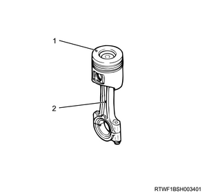
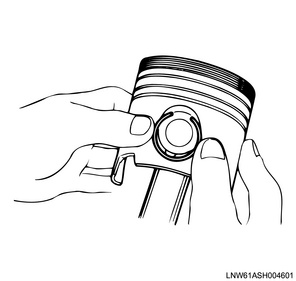
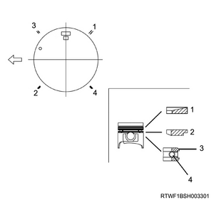

1. Install the connecting rod to the piston.
Note
- Install so that the piston head front mark and the connecting rod cast mark face the same direction.

2. Install the snap ring to the piston.
Note
- Install the snap ring to one side.
3. Apply the engine oil to the piston pin.
4. Install the piston pin to the piston and the connecting rod.
Note
- Push it into the piston and the small end of the connecting rod.
5. Install the snap ring to the piston.
Caution
- Check that the snap ring is installed in the ring groove.
- Confirm that the connecting rod slides smoothly.

6. Install the piston ring to the piston using a ring pliers.
Note
- Insert the piston rings in the order shown in the diagram.
- Install the second and first compression rings so that the laser markings face upward.
- Before installing the oil ring, insert the coil expander into the oil ring groove while taking care not to create gaps on either side of the coil expander.

- No. 1 compression ring end gap
- No. 2 compression ring end gap
- Oil ring end gap
- Coil expander end gap
Note
- When the compression ring is reused, make sure not to insert it upside down.
- There is no difference between the top and bottom of the oil ring.